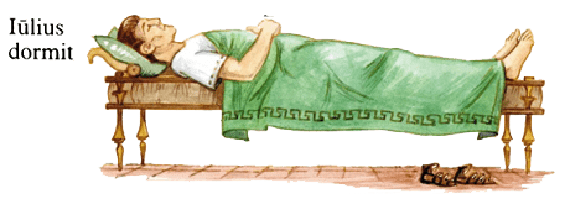
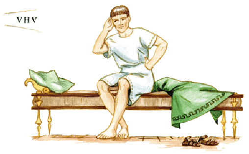

PVER IMPROBVS
I. SCÆNA PRÍMA
Persōnae: Iūlia, Mārcus, Quīntus.
Iūlia cantat: “Lalla.” Iūlia laeta est.
Mārcus: “St!” Mārcus laetus nōn est.
Iūlia cantat: “Lalla, lalla.”
Mārcus: “Ssst!” Mārcus īrātus est.
Iūlia cantat: “Lalla, lalla, lalla.”
Mārcus Iūliam pulsat.
Iam Iūlia nōn cantat, sed plōrat: “Uhuhū!”
Mārcus rīdet: “Hahahae!”

Quīntus Mārcum videt. Mārcus nōn videt Quīntum.
Quīntus: “Quid? Mārcus puellam pulsat — et rīdet!”
Quīntus īrātus est et Mārcum pulsat! Iam nōn rīdet Mārcus. Mārcus īrātus pulsat Quīntum.
Iūlia: “Ubi est māter?” Iūlia Aemiliam nōn videt.
Iūlia Aemiliam vocat: “Māter! Mārcus Quīntum pulsat!”
Mārcus (īrātus): “St!” Mārcus Iūliam pulsat.
Iūlia plōrat et Aemiliam vocat: “Mamma! Mam-ma! Mārcus mē pulsat!”
Aemilia venit.

II. SCÆNA SECVNDA
Persōnae: Aemilia, Iūlia, Mārcus, Quīntus.
Aemilia interrogat: “Quis mē vocat?”
Quīntus respondet: “Iūlia tē vocat.”
Aemilia Quīntum interrogat: “Cūr Iūlia plōrat?”
Quīntus respondet: “Iūlia plōrat, quia Mārcus eam pulsat.”
Aemilia: “Quid? Puer parvam puellam pulsat? Fū! Cūr Mārcus Iūliam pulsat?”
Quīntus: “Quia Iūlia cantat.”
Aemilia: “Ō Iūlia, mea parva fīlia! Mārcus puer probus nōn est; Mārcus est puer improbus!”
Quīntus: “Iūlia puella proba est.”
Aemilia Quīntum interrogat: “Ubi est Iūlius? Cūr nōn venit?” Aemilia Iūlium nōn videt.
Respondet Mārcus: “Pater dormit.”
Quīntus: “Māter nōn tē, sed mē interrogat!”
Aemilia: “St, puerī! Ubi est pater?”
Quīntus: “Pater nōn hīc est, sed Mārcus hīc est.”
Quīntus Iūlium vocat: “Pater! Pa-ter!”

Iūlius Quīntum nōn audit neque venit. Cūr Iūlius Quīntum nōn audit? Iūlius eum nōn audit, quia dormit.
Mārcus: “Hahae! Pater dormit neque tē audit.”
Aemilia: “Fū, puer!” Aemilia īrāta est. Māter fīlium verberat: tux-tax, tux-tax...
Mārcus plōrat: “Uhuhū!”
Iūlius eum audit. Iam nōn dormit pater.

III. SCÆNA TERTIA
Persōnae: Iūlius, Aemilia, Iūlia, Mārcus, Quīntus.
Quīntus: “Pater venit.”
Aemilia Quīntum nōn audit, quia Mārcus plōrat.
Iūlius Quīntum videt eumque interrogat: “Cūr Mārcus plōrat?”
Quīntus respondet: “Mārcus plōrat, quia māter eum verberat.”
Iūlius: “Sed cūr māter Mārcum verberat?”
Quīntus: “Mārcum verberat, quia puer improbus est. Mārcus parvam puellam pulsat!”
Iūlia: “Mamma! Pater hīc est.” Aemilia Iūlium videt.
Aemilia: “Tuus Mārcus fīlius improbus est!”
Iūlius: “Fū, puer! Puer probus nōn pulsat puellam. Puer quī parvam puellam pulsat improbus est!”
Iūlius īrātus puerum improbum verberat: tux-tax, tux-tax, tux-tax...
Mārcus plōrat.
Quīntus laetus est et rīdet. Iūlia laeta nōn est neque rīdet. Cūr nōn laeta est Iūlia? Nōn laeta est, quia Mārcus plōrat. Iūlia est puella proba!
Puer rīdet. Puella plōrat. Quis est puer quī rīdet? Puer quī rīdet est Mārcus. Quae est puella quae plōrat? Puella quae plōrat est Iūlia.
Mārcus, quī puellam pulsat, puer improbus est. Puella quam Mārcus pulsat est Iūlia. Iūlia Aemiliam vocat. Aemilia, quam Iūlia vocat, māter līberōrum est. Aemilia puerum verberat. Puer quem Aemilia verberat est Mārcus.
Quem vocat Quīntus? Quīntus Iūlium vocat. Iūlius, quem Quīntus vocat, pater līberōrum est. Iūlius Quīntum nōn audit. Quem audit Iūlius? Iūlius Mārcum audit. Puer quem Iūlius audit est Mārcus.
Puella quae cantat laeta est. Puella quae plōrat nōn est laeta. Puer quī puellam pulsat improbus est.
* * *
GRAMMATICA LATÍNA
Nōminātīvus et accūsātīvus
Masculīnum:
Mārcus rīdet. Quīntus Mārcum pulsat.
Mārcus Quīntum pulsat. Quīntus plōrat.
‘Mārcus’ nōminātīvus est. ‘Mārcum’ accūsātīvus est. ‘Quīntum’ est accūsātīvus, ‘Quīntus’ nōminātīvus. Nōminātīvus: -us (-er). Accūsātīvus: -um.
Exempla: Iūlius, Iūlium; fīlius, fīlium; puer, puerum; eum.
Fēminīnum:
Iūlia cantat. Mārcus Iūliam pulsat.
Iūlia Aemiliam vocat. Aemilia venit.
‘Iūlia’, ‘Aemilia’ nōminātīvus est. ‘Iūliam’, ‘Aemiliam’ accūsātīvus est. Nōminātīvus: -a. Accūsātīvus: -am.
Exempla: puella, puellam; parva, parvam; eam.
Verbum
Iūlia cantat, Mārcus rīdet. Iūlius dormit.
‘Cantat’ verbum est. ‘Cantat’, ‘rīdet’, ‘dormit’ tria verba sunt.
Exempla: cantat, pulsat, plōrat, vocat, interrogat, verberat (-at); rīdet, videt, respondet (-et); dormit, venit, audit (-it).
Nōminātīvus: Accūsātīvus: Verbum:
Mārcus Iūliam pulsat.
Quīntus Mārcum videt.
Iūlia Aemiliam vocat.
Aemilia Quīntum interrogat:
“Quis mē vocat?”
Quīntus respondet:
“Iūlia tē vocat.
Mārcus eam pulsat.”
Aemilia puerum verberat.
Mārcus plōrat.
Iūlius eum audit.
Iūlius venit.
“Puer probus parvam puellam nōn pulsat!”
Iūlius īrātus puerum improbum verberat.